|
 |
教你炒股票10：2005年6月，本ID为何时隔四年后重看股票
(2006-11-24 )
2001年6月后，本ID就从未看过股票，直到2005年6月。本ID是严重反对人民币升值的，曾写有“货币战争和人民币战略”在网上广泛流传。但到2005年6月，本ID知道有些事情不是人力可为的，天要下雨、娘要嫁人，LET IT BE吧。所以2005年6月，本ID时隔四年后重看股票。
在强国论坛的人都知道，2005年6月最暴跌时，本ID连续三次罕有地表扬一个政府官员，就是股市当时的新人、如今那位著名的山东人。其后还专门写文章为他说股改“开弓没有回头箭”而热烈鼓掌。同时，本ID却曾写过这样的文章“群狼争肉----国有股流通与国有资产蚕食、瓜分游戏！”。这，难道是本ID逻辑混乱、前后矛盾吗？
非也，这就是昨天本ID所解释的〈论语〉里“子曰：众，恶之，必察焉；众，好之，必察焉”的完美应用。确实，从好恶角度，本ID严重反对人民币升值、反对国有股流通，而且深刻地分析了这些玩意后面的现实逻辑关系和严重后果。但在股市里，本ID从来没有好恶。只要有点金融常识的人都知道，本币的历史性升值所带来历史性牛市曾被太多国家所经历。本ID只知道，一旦人民币升值、国有股流通，股市将大涨。知识分子为什么可笑，就是有好恶而无“察”，企图以理论来理论现实，十足脑子水太多了。
书呆子是不适宜投资市场的，错了，应该是投机市场。别相信这世上有什么投资市场，世界本身都是投机的，还有什么资可投？
就像有人号称所谓爱情，而所有的爱情，都不过是遮掩性游戏谎言的一条内裤而已。所有的性游戏都可以用这样的数学表达式表示：4N9。N代表从0到无穷的自然数，0等于没搞上，无穷等于天长地久也就是废话，1等于一夜情419，所有的性游戏包括爱情，都被这样一个数学表达式表示了。
那么，任何一个投资者和股票的性关系，也完全可以以此表示。任何股票和你，都不过是一个4N9的关系，可以投机的就是这个N，如果你能在这个N里把一只股票当面首一样采尽他的精气，那你就是高手了。其后再换一个继续N2的游戏，如果该游戏可以新戏不断，而你又能采之而不被采，那你就是高手中的高手了。世界就那么简单，别把自己搞糊涂了。
股票，恶之，必察焉；股票，好之，必察焉。由孔子的话，不难明白以上的道理，而明白这道理，就明白投机市场第一原则“只搞能搞的”所依。智慧都是相通的，“只搞能搞的”，而不是“只搞喜欢的”。能搞是需要“察”而得之，不是靠喜好厌恶而来的。随便在市场里抓一个人，问他为什么买手里的股票，一万个人有9999个告诉你因为他的股票如何如何好，这种人能在市场上长久活下来就世界最大奇迹了。本ID从来不觉得自己手里的股票有什么好，只知道他们能搞。
但几乎所有的人，包括庄家、散户，都喜欢为自己股票的好找理由。别以为庄家就不这样，庄家里的傻人从来不比散户少，本ID见多了。这些人，拿了股票就到处找理由为其持有、上涨编故事，就算股票已经从10跌到1了，还乐此不疲。市场里所有亏损，都是因为持有了不能搞的股票而造成的。但无论任何股票，能搞总是相对的，不能搞却是绝对的。就像4N9里，如果你为了某面首把N设成无穷，那么劝你自杀吧，因为你活也白活了，你已经不是人，而是某面首的附属物。N只能有限地给予一个固定的能搞对象，有N1，就要有N2，这样才能生生不息，才能风生水起。
但在4N9任意一段N中，这面首、这股票就是你的全部，你要全身心地投入去“察”去“采”，投机市场，机会总是一闪而过，别到白天才问夜的黑，那什么菜都凉了。能搞是相对的，意味着随时能搞就会变成不能搞。一旦这“机”失去了，就会在不能搞的泥潭难以自拔。无论对面首或股票，都要全身心地往死里干然后抛弃，这是不能偏废的两方面，任何的失败者都一定是至少在其中一面失败了。
(注：1没往死里干扔早了，2干完不抛弃白干了。）
在4N9的任何一段N中，可以有世界上最浪漫的故事、最火热的缠绵，有无数的细节，从前戏到缠绵到进入到高潮到不应到抛弃，所有的故事只是唯一的故事，就像所有的AV都只有同一的情节。从下一期开始，我们将仔细分析同一AV情节的每一个细节，让每一细节深入你心，成为本能的反应，然后才能成为AV主角，在每一段4N9中高潮迭起，采阳不休。
----------------------------------------------------------------------------------------------
每日解盘（2006-11-24 12:15:10
缠中说禅：2006-11-24 12:15:10
大盘如期调整，请自己密切关注逆市不跌的股票，下轮的黑马由此产生的可能性很大。目前正在5日线的多空争夺中，多头胜则会出现最强走势，当天调整完成，否则调整时间将大幅度延长。但个股表现不会差，密切关注未启动的、逆势走强的股票。
缠中说禅：2006-11-24 12:17:20
本ID有空会在最新帖子里即时有关大盘走势的提示。是否准确，各位可以自行判断。昨天的提示转录如下：2006-11-23 13:42:46
再次友情提醒，目前深成指数与沪指已出现背离，这是一个很不好的信号，如果2点以后还不改变，盘中震荡不可避免。而且指数进入调整的可能进一步加大。
2006-11-23 15:11:58 但大盘今天终显疲态，两地指数出现背离，成交量也有所萎缩，预示真正的调整迫在眉睫。注意，盘中震荡和调整可不是一回事，即使最短线的调整也至少要去考验5天甚至10天线的。
还是像中午所说的，对调整无须恐惧，技术好的人最喜欢调整了，调整正是寻找下一次上涨好股票的时候，至少可以利用调整换股或打差价，前期没动的股票也会借调整启动的。
缠中说禅：2006-11-24 13:34:49 五日线压力不少，站稳前应多观察，密切注意不随大盘而动的股票。
缠中说禅：2006-11-24 13:50:35
重新突破5日线，14点的回试确定站稳，大盘将展开反攻。
缠中说禅：2006-11-27 12:19:44 还是那话，短线继续板块轮动，没动的都要动。调整是短线高手的天堂，当然，中线的也可以打点短差，技术一般的就看着吧，这“上上下下”的享受，也可以继续享受享受。
缠中说禅：2006-11-27 15:10:23 今天大盘的走势十分规范，最终就刚好收在本ID所强调的5日线上，其实，目前大盘并不太重要，关键是把握好个股轮动，本ID每次都反复强调这一点，强调不用怕调整，调整就是机会。
大盘结束调整后的这次上攻一旦完成，下一轮的调整将比较大，是全面性的，大多数个股都会跟着调，而不像这次，就大盘股调，这点是必须注意的，本ID事先告诉各位了。
每日解盘（2006-11-28 12:15:13）
缠中说禅：2006-11-28 12:15:13 今天走势很正常，关键还是这两天一直强调的5日线，目前最稳妥的走法就是让5日线和10日线来个接吻的前戏，然后再次高潮。但必须再次指出，这次高潮过后，相应的不应期要比这次长。
缠中说禅：2006-11-28 12:37:43 和各位说说银行股，不是让各位现在买，只是银行股是大盘风向。
目前最重要的是招商，他突破历史天价后回试。整个大盘和银行股的走势与之极为密切，一旦他能真正突破历史天价，所有银行股都会进一步扩展上升空间。所以他的走势对短、中线大盘的力度十分关键。
试想，一个站在25-30元的招行，为所有股票打开了多大的上升空间。更别说50元的了。
招行最终能否上50元，这点本ID不愿意预测。但本ID只知道，每次大行情，深发展都上50元。招行也是深圳的，他的行长姓马。
缠中说禅：2006-11-28 12:43:24
[匿名] 蕃茄2006-11-28 12:35:18
缠中说禅难度不大就不叫前戏了。前戏是难度最大的，有前戏，高潮可待，连前戏都没有，只能喝西北风了。
---------------- 吻有几种：如果是飞吻，太轻飘，以后的走势不稳。唇吻：这要小心骗线，只要不是骗线，其后走势都较好。湿吻：骗线几率太大，但如果不是，那走势反而比较火暴。
缠中说禅：2006-11-28 14:56:17
这大盘够有表演欲的，中午本ID说最稳妥的走法就是让5日线和10日线来个接吻的前戏，结果下午就来了一次表演，把那些装纯情的吓了一跳。上面还说了，吻有三种：如果是飞吻，就这一下就没了，明天直接攻上5日线，扬长而去；如果是唇吻，那今天下午的表演还会有的。5日线是压力。如果是湿吻，10日线一定要破的，那种火辣辣的镜头会不断出现，把所有纯情分子羞跑了，高潮才会出现。是什么吻，判断很简单，看住5日线就行了。下午马上有应酬，晚上不一定能上来，尽量争取吧。各位，看多点AV，不纯情了，股票自然能做好。纯情的人，连吻都怕看的，是股票不好的。
回复：
有问题请到新帖子里问。
[匿名] 乡下人2006-11-24 12:23:21
你这厮，自己的家园已经不错，每每去别处打广告，不自信。不要拉大旗做虎皮。
============
正因为有绝对的信心才要广告，广而告之，中国有十几亿人，潜力巨大。
(2006-11-24 12:26:23)
----------
[匿名] 快 2006-11-24 12:09:30
600118,600123,600832,数女如何看待？
=================
600118 中线调整，等待年线上移给予支持
600123 中线问题不大，短线15.8压力不破，小心回调压力。
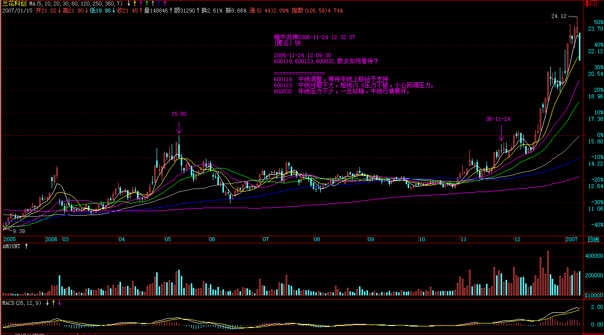
600832 年线压力不少，一旦站稳，中线行情展开。
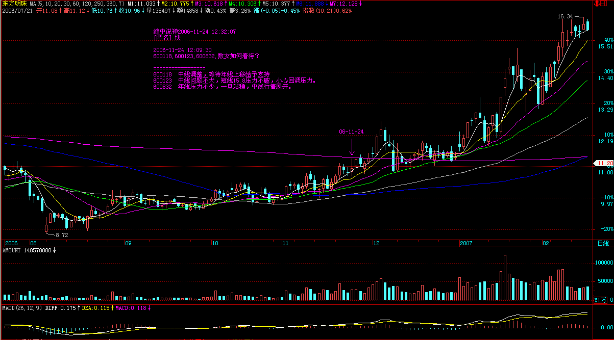
(2006-11-24 12:32:07)
---------
[匿名] 你的样子
2006-11-24 12:24:46
数女你好，我花了几天时间把你的博客从头看到这了，佩服、佩服。
有个问题想请教，像我基本上是股票的门外汉，能否趁现在的天时也介入股票呢？对股票来说是搞明白些重要，还是大势更重要些？
=======
先学习，别从开始就糊涂，那就麻烦大了。
(2006-11-24 12:33:04)
-------
[匿名] 惊为天人2006-11-24 12:28:44
美女，能否推荐下，股票入门的好书啊。看了你的文章，我深刻的理解为什么高手都是寂寞的啦。
=============
就看本ID的，对股票，全中国没有比本ID更权威的，你还想看什么？
(2006-11-24 12:33:57)
-------
馋中听禅2006-11-24 12:34:42
请问禅师，说起诗词曲赋，高晓松当面首够格吗？我欣赏他，尽管他是我们北大的对手清华的
================
现代诗词就不说了，古典诗词，暂时本ID还没看到当代有谁比本ID写得好的，本ID在网上贴的，都是中下水平的，暂时几次挑战都没见对手，其他就不说了。
(2006-11-24 12:38:11)
-------
[匿名] 灵岩2006-11-24 12:35:24
楼主：真的非常想知道你对封基、钢铁、电力（或公用事业股）的看法，希望你能够赐教，谢谢！
=================
都没问题，钢铁的中线行情不都在展开吗？其他也会表现的，拿着请耐心。
(2006-11-24 12:39:27)
-------
[匿名] 灵岩2006-11-24 12:39:15
不然我就请教个股吧，600026、600886、600401、600012、600231会如何走。谢谢！
=====================
600026 30天线中线关键，不破继续持有，买入最好时机已过。
600886 回试年线得到支持，再确认不破有望展开中线行情。
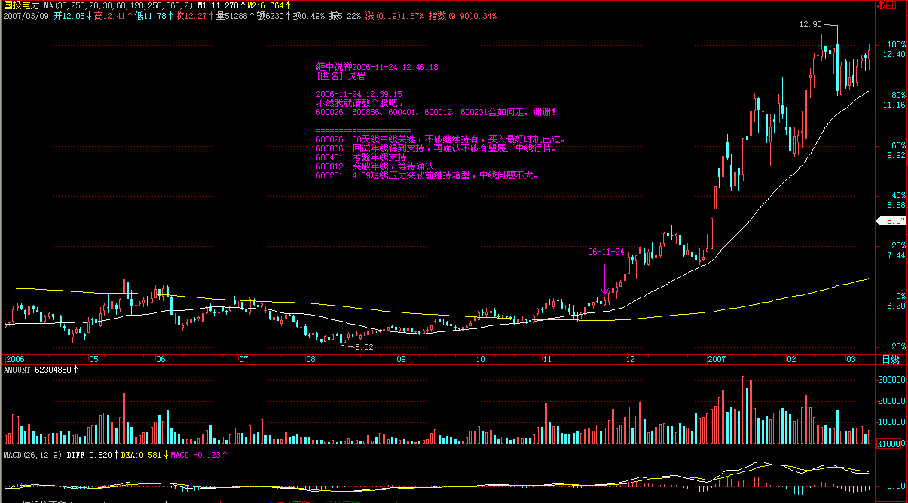
600401 考验年线支持
600012 突破年线，等待确认
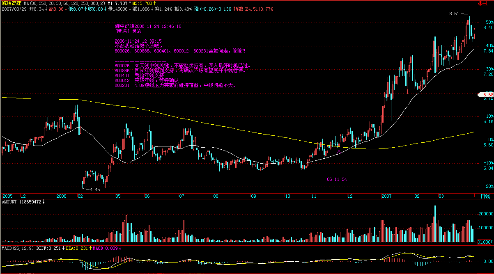
600231 4.89短线压力突破前维持箱型，中线问题不大。
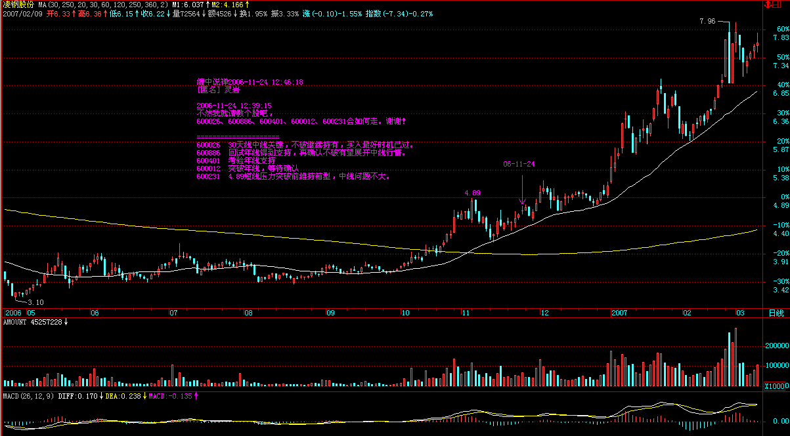
(2006-11-24 12:46:18)
-------
馋中听禅2006-11-24 12:43:40
禅师好！
大作已拜读并收藏，关于股票，禅师用的是未复权的图形，为何不用复权的？比如：600581周120p在4元阻力位若复权120p为3元我的理解：大多散户不复权，故将错就错。繁请指正！
============
打倒夫权，当然就不能要复权的。
(2006-11-24 12:47:18)
-------
[匿名] 爱你——数女 2006-11-24 12:51:45
请教放地产看涨还是看跌？？
=========
二线地产股补涨，然后就是三线的，把握这个节奏。
(2006-11-24 12:53:45)
-------
[匿名] 老闲2006-11-24 12:50:00
连着看了几天你的BLOG，突然感觉自己就是属于你说的那种不能挣钱的废人，还号称学过经济学，不是一般的厚脸皮。向姐姐表示一下感谢，因为确实，你有的想法解决了一些困扰我的问题，呵呵，思想这个东西，有时候会产生意向不到的外部效应，感谢互联网，感谢博主分享自己的知识和经验。另外，请教个实际问题，看图的时候，是否应该看复权以后的K线？还想问问8.1买入的000898 3.2买入的000725 4块买入的600301，这三只股票应该如何操作？出了，还是留，目前这三支股占仓位不大，还有资金可以操作，多谢
=================
不复权，复权的可参看历史阻力、支持位
000898一定不要追高买股票，刚突破年线回试时买不更安全有效？
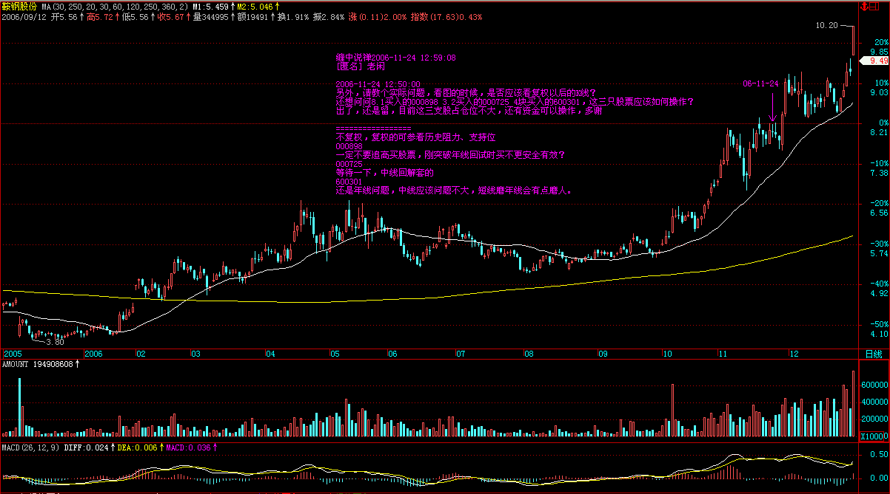
000725
等待一下，中线回解套的
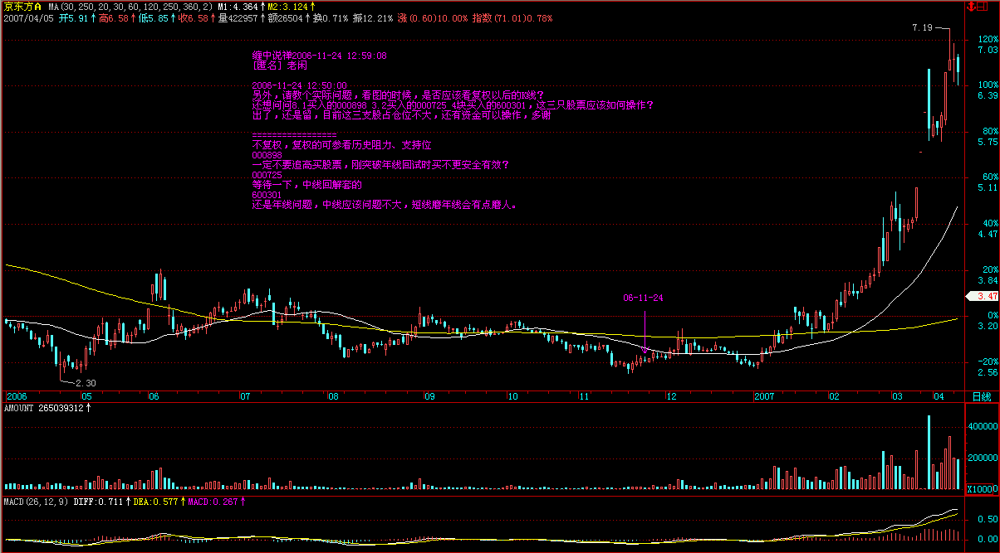
600301
还是年线问题，中线应该问题不大，短线磨年线会有点磨人。
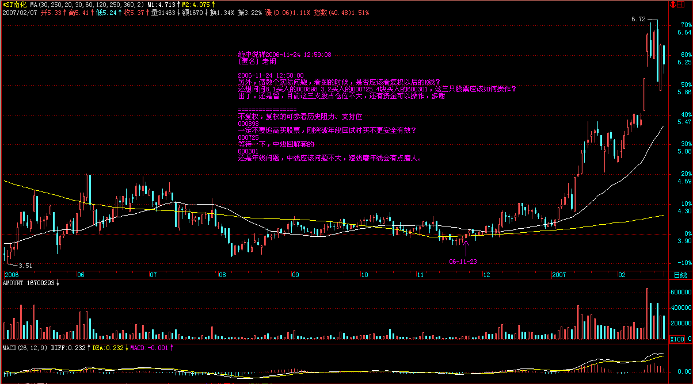
(2006-11-24 12:59:08)
-------
五日线压力不少，站稳前应多观察，密切注意不随大盘而动的股票。
(2006-11-24 13:34:49)
-------
重新突破5日线，14点的回试确定站稳，大盘将展开反攻。
(2006-11-24 13:50:35)
-------
反攻力度有点弱。个股表现不错，房地产股票但上面所说的，一线然后二线接着三线，现在连天鸿这种三线亏损房地产股票也启动了，但这时候，房地产板块短线压力就开始增加了，中线暂时问题不大。
(2006-11-24 14:14:17)
-------
[匿名] 熊熊2006-11-24 14:14:06
姐姐，我是熊熊，四年前在股市亏了本的笨丫头。看了你的博客我感触很深决定不再做个笨丫头了跟风的人。向你讨教一些建议，请你指点。近期只看了涨了指数没赚钱。这俩只股票走势能帮我讲讲吗？谢谢姐。
============
晚上回答你
(2006-11-24 14:58:46)
-------
如期反攻，力度有问题，下周反复难免。短线5日线是关键，不能跌破，跌破则重新考验2000点下缺口支持。
(2006-11-24 15:00:18)
-------
[匿名] 夜雨2006-11-24 13:08:50
姐姐,真是高手, 这几天发现您的文章,真是惊为天人,谢谢你刚才回答了我580004的问题,我现在手上还有重仓,601111,成本4.45,000039,成本14.2,600436,成本17.4,这些要卖还是要留,还有想进600832,现在能进吗,谢谢
==============
601111 千万别追高买股票，一定要在刚启动的时候买，中线大幅上涨后在等中线调整结束再买，这样虽然会浪费很多所谓的机会，但这样一定能活下来。现在牛市没问题，随便怎么买都会挣钱，一旦养成这个习惯，以后就麻烦大了。该股票中线是没问题的，短线折腾少不了。
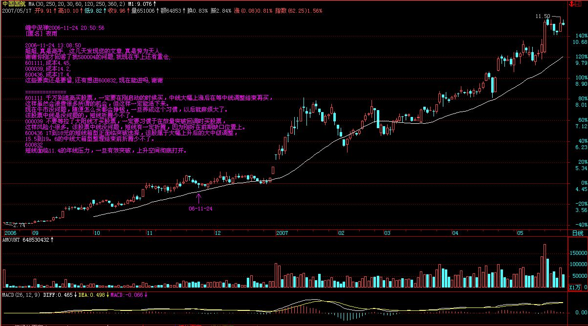
000039 不要等拉了大阳线才买股票，一定要习惯于在放量突破回调时买股票，这样风险小很多。该股票中线没问题，短线有一定折腾，因为刚好在前期缺口位置上。
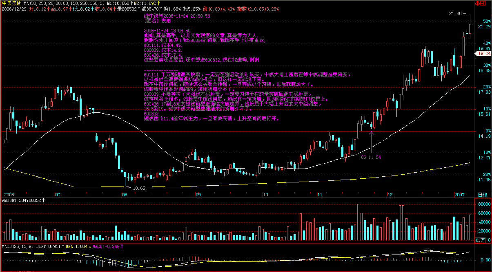
600436 17到18元的短线箱型正面临突破选择，该股属于大幅上升后的大中级调整，15.5到19。6的中线大箱型整理结束前折腾少不了。
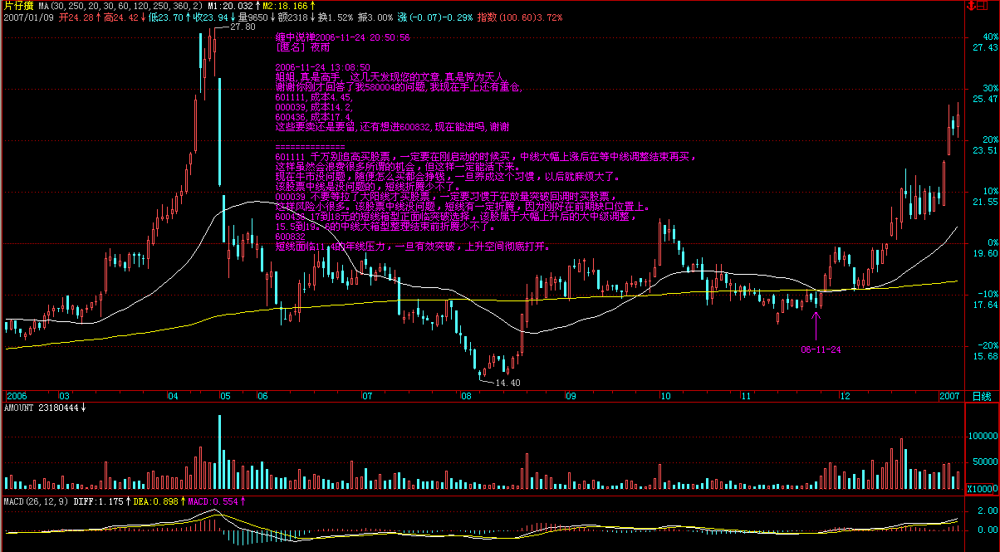
600832
短线面临11.4的年线压力，一旦有效突破，上升空间彻底打开。
(2006-11-24 20:50:56)
-------
[匿名] 熊熊2006-11-24 13:39:53
姐姐。我近来看了你的博客我就是不能挣钱的人。请教您000562和000875的走势。请赐教。在钞股方面请多出点文章。谢谢。
==============
000562 暴长后的中线大调整，短线有一次突破走势，但是否真突破，要密切观察，因为这种类型的走势最多骗线了。短线压力8.8,中线压力9。6，展开第二波，必须有效突破后一位置。
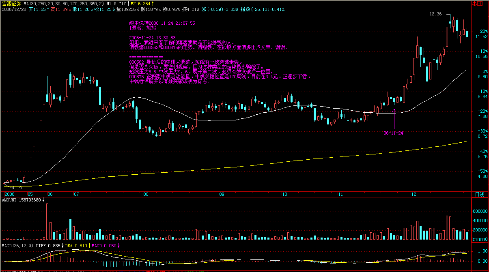
000875 正积聚中线启动能量，中线关键位置是120周线，目前在3.4元，正逐步下行，中线行情展开以有效突破该线为标志。
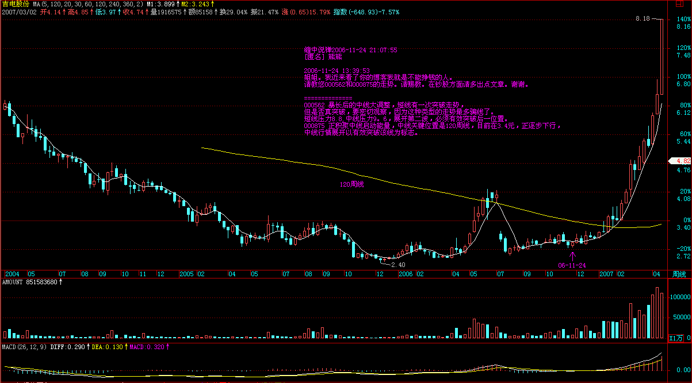
(2006-11-24 21:07:55)
-------
[匿名] 请教LZ2006-11-24 21:10:32
600832的年线是8.78啊，怎么是11.4，差这么多？我的设置是240日，未复权的。
==========
你的不对，找找原因，另外，年线一般用250天。(2006-11-24 21:16:36)
-------
风月2006-11-24 21:14:06
就看本ID的，对股票，全中国没有比本ID更权威的，你还想看什么？现代诗词就不说了，古典诗词，暂时本ID还没看到当代有谁比本ID写得好的，本ID在网上贴的，都是中下水平的，暂时几次挑战都没见对手，其他就不说了。
--------
天下间，就没见过有这么自信的人！如果数学妹妹的自信给我一点，我也会改变很多！悄悄的问一声妹妹，怎么样才能有强大的自信？？
===========
实力(2006-11-24 21:17:35)
-------
对具体股票不能一个个解释了，太浪费时间。有些人一个人就弄了十几只股票，如果这样，本ID什么都不干都解释不过来。以后每次每人最多一只股票，特别以后人越来越多，这种情况要找一个好的解决办法。而最好的办法，就是你们要自己学会。学会渔，自有鱼。
(2006-11-24 21:20:01)
-------
[匿名] 咕咚2006-11-24 21:17:18
不知下周初楼主对沽证有何见解？
===========
等待一次大盘转折时的大爆发。
(2006-11-24 21:23:43)
-------
[匿名] toLZ2006-11-24 21:22:55
你的不对，找找原因，另外，年线一般用250天。小姐如何设置，我一向都是这么看的啊？我刚才注意比照了一下，你前面所说的年线我都对不上，万望指教，或许这个问题对你很简单。
===========
对不起，本ID对电脑系统没什么研究，东方明珠8元多的年线肯定不对，可能没把G股的除权算上，每套系统都不同，自己慢慢研究去吧。
(2006-11-24 21:28:07)
-------
[匿名] 无言 2006-11-24 20:11:21 今夜外汇市场美元大跌,下周对股市会有何影响
==========
这种思维方式是完全错误的，不要预测任何消息的影响，而是要仔细观察市场对消息的所有消息的综合反应，也就是市场的走势本身。 就像感冒之于人的体质，消息是来测试市场体质的，而不是用来预测的。
(2006-11-24 21:31:16)
-------
[匿名] 数妹fans2006-11-24 21:28:58
数妹辛苦了！
===========
没事，有时间就多说点，没时间就少说点，本ID不能保证天天都能如此的。(2006-11-24 21:32:28)
-------
[匿名] 摄影之友2006-11-24 21:24:04
LZ:你更象是智慧的化身!~~~ 面对楼主的大智大慧.真的是听君一习言.胜读十年书.而您这样年轻,又怎能不让我想起:有志不在年高.无志穷活百年这句话!~~~你是智慧之子!~~~我入股市也很长时间,大概有近三个月了.可我仍旧输在心态的问题上.唉.慢慢调整吧.我前几天出掉了600177(雅弋尔),可今天它却逆市上涨.所以想请教:
1 600177我下周可以再追回来吗.尽管我看LZ说,对摒弃的股票就 要绝情;
2 600028(中国石化),我是7.70的价格,600019(宝钢),我是6.36元的价格.可以继续持有吗;
3 请教LZ下周大势有什么评论吗;
=====
你这种问题有典型性，本ID不介意说多两句。
首先你要问自己当时为什么抛那股票。如果你是本着中线介入的，那股票中线所有指标都走得很好，一直在120周线上调整，没有跌破这中线的生命线，所以找不到要中线走的理由；短线就不说了，走了就走了。所以买股票时一定要先搞清楚你为什么要买，你搞他的理由是什么，是短线的还是中线的，相应的要设计好介入的模式和仓位控制，不能被市场的短线波动所影响。
你另外两只股票介入的价格是不是有点太追高了，中线，它们都没有问题，但本ID觉得还是要养成绝对不追高的好习惯，除非是刚启动，在大幅上涨后才追高，这不是投资的长久之计。
大盘走势在上面收盘总结里已经说了。找3点附近本ID的帖子看看。
(2006-11-24 21:41:13)
-------
这是今天在盘中的一些即时提示，好好研究一下，以后指数期货用得着。
缠中说禅2006-11-24
12:15:10
大盘如期调整，请自己密切关注逆市不跌的股票，下轮的黑马由此产生的可能性很大。
目前正在5日线的多空争夺中，多头胜则会出现最强走势，当天调整完成，否则调整时间将大幅度延长。但个股表现不会差，密切关注未启动的、逆势走强的股票。
缠中说禅2006-11-24 13:34:49
五日线压力不少，站稳前应多观察，密切注意不随大盘而动的股票。
缠中说禅2006-11-24 13:50:35
重新突破5日线，14点的回试确定站稳，大盘将展开反攻
缠中说禅2006-11-24 14:14:17
反攻力度有点弱。个股表现不错，房地产股票但上面所说的，一线然后二线接着三线，现在连天鸿这种三线亏损房地产股票也启动了，但这时候，房地产板块短线压力就开始增加了，中线暂时问题不大。
缠中说禅2006-11-24
15:00:18
如期反攻，力度有问题，下周反复难免。短线5日线是关键，不能跌破，跌破则重新考验2000点下缺口支持。
(2006-11-24 21:46:39)
-------
[匿名] toLZ2006-11-24 21:41:34
对不起，本ID对电脑系统没什么研究，东方明珠8元多的年线肯定不对，可能没把G股的除权算上，每套系统都不同，自己慢慢研究去吧。
——————————
谢谢LZ，确实在夫权上的问题，已经解决了。非常感谢。
我一直用的是标准除权的，软件是最简单的钱龙，不知mm用的是何方神圣？
=================
机构室里是什么就用什么，每个证券公司都有所不同，本ID也不大注意。关键是人，而不是系统。
(2006-11-24 21:49:57)
-------
[匿名] 在路上2006-11-24 21:42:35
禅师没回应我的股票问题那也没关系，在下还想请教２个问题：
１、我的侄女今年刚上初一，能否推荐几本未来对她在数学方面有拓展的读本。
2、参否再解释几句“教你炒股票”4的那句“用你的眼睛去看，用你的心去感受”。唉！本人资质有限啊，还望赐教，谢谢！
==============
关键是她自己的兴趣，如果没有这方面的兴趣，看什么都不好使。
首先不要受消息、情绪等等的影响，这样你的眼睛才看得清楚，然后你的心才会敏感，慢慢对市场就有了一种灵感，市场仿佛就是你的身体一样，他有什么风吹草动、头疼脑热的，你马上就有感应，这样才有点样子，但这是要慢慢来的，先把一些基础的东西变成自己的一种本能反应，例如建立符合自己的有效的操作程序等等，这是初学者最基本的东西。
(2006-11-24 21:57:10)
-------
[匿名] 破缠悟禅2006-11-24 21:52:10
禅师你好!
本人新进入股市,请教几个问题!麻烦禅师帮忙分析!
目前本人手中持有:000858 000659 600050的股票,麻烦禅师给分析下形势!谢谢!
另外本人想学下短期炒盘,请问禅师有什么忠告给些!
=============
000858 大涨后的中线大调整，现在正等待5周线的上移支持，如果短线能站稳5周线，则第二波突破就很有可能出现，否则还要折腾折腾。
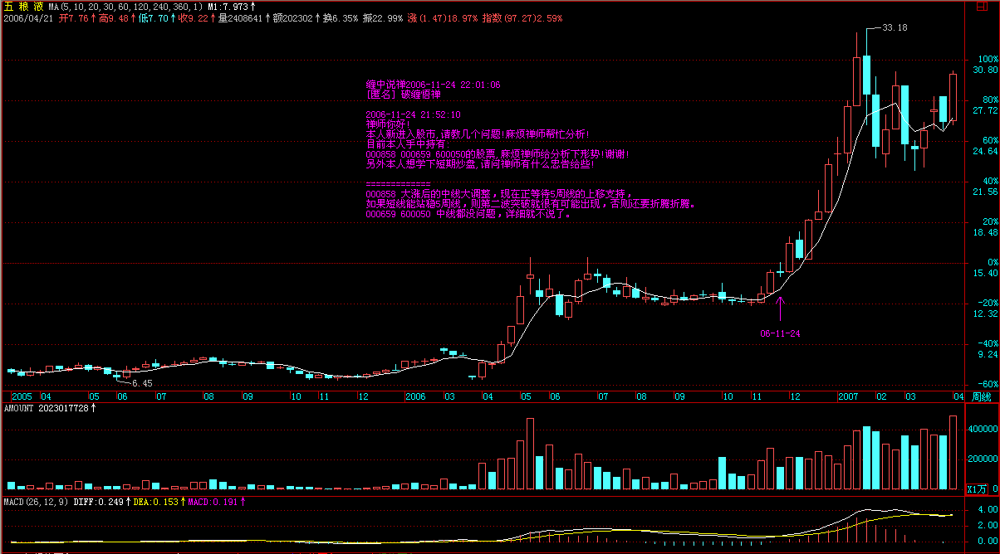
000659 600050 中线都没问题，详细就不说了。
(2006-11-24 22:01:06)
-------
[匿名] 小迷糊2006-11-24 21:54:19
我从mop追数女到天涯杂谈,又到股市论坛,再到这个blog.谢谢数女在方法论上对股票操作的评论,看了真感觉当头棒喝,让我悟了很多东西,本月实战战果辉煌,无一失手,这是数女的功劳.哈哈.数女,到成都请你喝茶,多谢多谢.
=====
要不断总结，不能被胜利冲昏头脑，毕竟现在是牛市，操作难度要小多了，市场操作是一个武功修炼的过程，不能把自己局限在一个境界里，要先摸索总结，然后寻求突破，达到一个新的境界。这都是自我修炼的过程，别人只能从旁说道几句。
(2006-11-24 22:05:16)
-------
[匿名] 摄影之友2006-11-24 22:08:35
你另外两只股票介入的价格是不是有点太追高了，中线，它们都没有问题，但本ID觉得还是要养成绝对不追高的好习惯，除非是刚启动，在大幅上涨后才追高，这不是投资的长久之计。
=====
谢谢LZ.那我下周如何操作?出掉它们吗(600028/600019)? 也不再追600177了吗?
郁闷!~~~ 唉..无知者无畏!!也许就是这样的心态我才追的.
======
也不用全抛了，毕竟中线行情还没有完全结束，如果你满仓这两只股票，那最好借短线冲高机会，减低一点仓位，这样就减少了风险，资金运用也可以灵活点。如果占仓位比例不高，那就留着也没问题。
说实在，你这类情况，谁处理都麻烦，而所有操作的困难都是操作的失误造成的，养成好习惯是投资第一重要的事情。别怕机会都没了，市场中永远有机会，关键是有没有发现和把握机会的能力，而这种能力的基础是一套好的操作习惯，这样所有的操作都没有什么两难的地方，都很简单。
真正的高手从来不迎难而上，把自己整天搞到制之死地而后生，看看庄子里解牛的故事，好好想想。
(2006-11-24 22:23:14)
-------
太晚了，先下，各位晚安，再见。
(2006-11-24 22:25:15)
-------
[匿名] thanks2006-11-24 22:23:22
LZ,我每天都光顾你的博客，在这里我学到很多的知识，感谢你给我们带来了快乐。
顺便问600797可以搞吗？
==============
中线没问题，短线最好的、也就是均线粘合时机已经错过，目前介入，要冒一定突破失败的风险，所以只能算是次好的时机，是否介入，关键看你对风险的承受能力如何了。
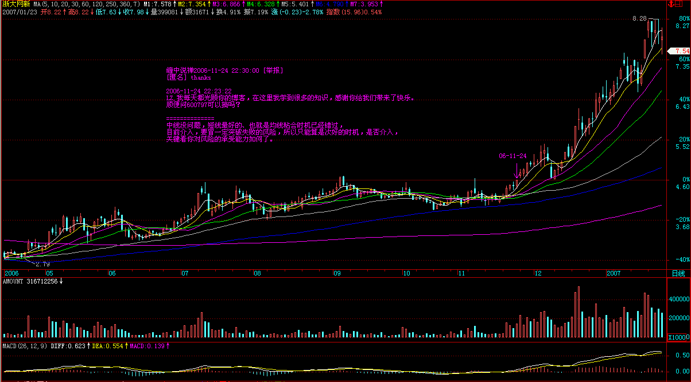
-------
今天的反复折腾在上周已经明确指出
2006-11-24 15:00:18
如期反攻，力度有问题，下周反复难免。短线5日线是关键，不能跌破，跌破则重新考验2000点下缺口支持。 本结论继续有效。
(2006-11-27 12:18:55)
-------
还是那话，短线继续板块轮动，没动的都要动。调整是短线高手的天堂，当然，中线的也可以打点短差，技术一般的就看着吧，
这“上上下下”的享受，也可以继续享受享受。
(2006-11-27 12:19:44)
-------
[匿名] 打死你我也不说2006-11-27 12:18:45
上午买了000004，请数女点评一下。
===============
中线有机会，但短线没突破4-4.2元的压力区，还要继续折腾。 另外，如果不是强力突破的走势，一般最好别早上买股票，因为没有T+0，经常下午可以有很好的选择。当然，如果是中线着眼，逐步建仓，那是另一回事。
(2006-11-27 12:23:33)
-------
[匿名] 请教2006-11-27 09:12:21
博主今天怎么还不来?在下有两个股请求诊断，600015华夏银行,600883博闻科技，万请不吝赐教.另:对博主学识阅历万分佩服.
============
600015 三线银行股，大盘调整后有补涨潜力。
600883 中线有潜力，短线等待均线系统走好。
(2006-11-27 12:33:23)
-------
[匿名] 数妹fans
2006-11-27 12:27:29
数妹，请帮我看看000608，600649后市如何操作？谢谢
=============
000608 二、三线房地产股，正补涨中，介入最好时机已过，目前介入有短线风险，中线问题不大。
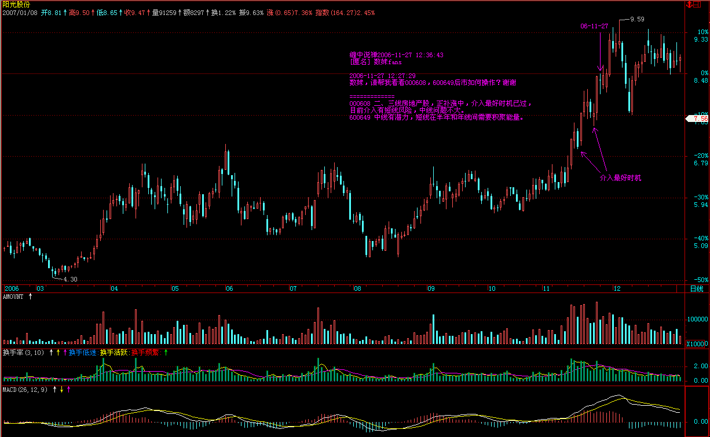
600649 中线有潜力，短线在半年和年线间需要积聚能量。
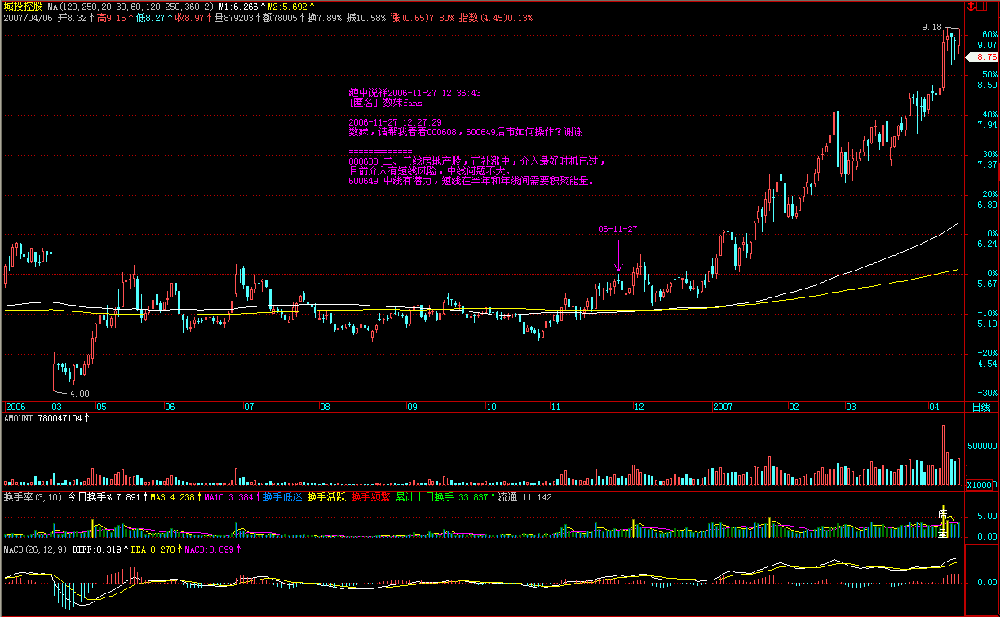
(2006-11-27 12:36:43)
-------
[匿名] 青皮六
2006-11-27 12:31:27
由女孩到禅师真是一大跨越,人的思想与年龄真的不成正比.请教女禅师该搞科技股了吧,基金还戏吗
===============
这是必然要搞的，只是迟早的问题，目前正积聚启动的能量。基金中线没完，但介入最好时机已过。
(2006-11-27 12:39:23)
-------
[匿名] 老无用2006-11-27 12:39:03
很受教。请教女禅师600376的走势？谢谢。
===========
三线地产，等待补涨契机。
(2006-11-27 12:40:57)
-------
[匿名] 博主2006-11-26 20:04:25
能帮忙看可按600018吗
=========
中线仍有潜力。短线再启动需要补量。
(2006-11-27 12:47:46)
-------
[匿名] nlittle
2006-11-27 12:41:12
哎，主力要恨死博主了，偶坚决支持。下午准备满仓认沽，要么升天，要么短期下下地狱。
========
心态好一点，不能赌性太大。除非你觉得自己短线感觉很好，否则最好不要满仓参与风险太大的品种。
赚钱是一辈子的事情，而不是一锤子的买卖。
(2006-11-27 12:49:57)
-------
[匿名] 国平
2006-11-27 12:43:39
请楼主看看600887、600200，多谢！
==========
600887 中线没问题，短线考验年线支持力度。
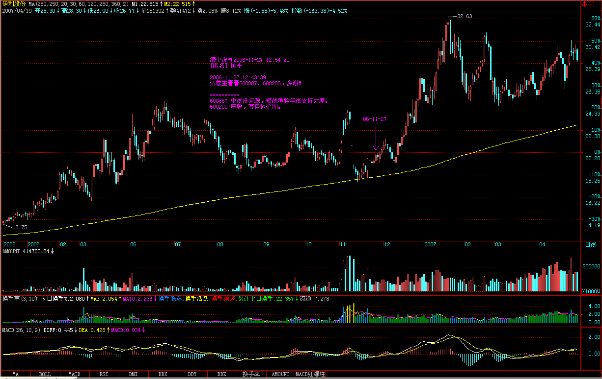
600200 庄股，有自救企图。
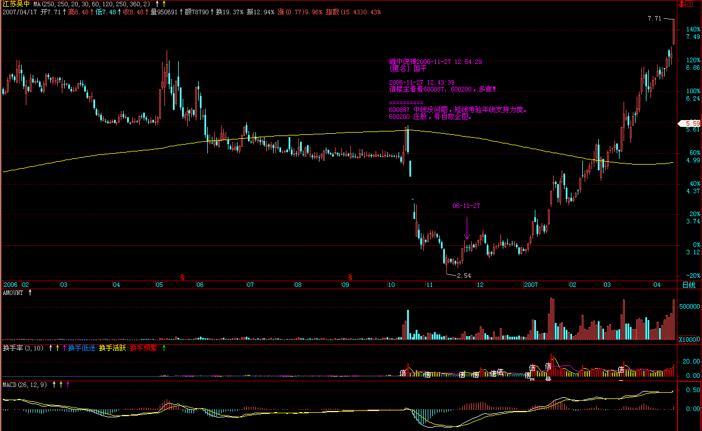
(2006-11-27 12:54:29)
-------
[匿名] 海子
2006-11-27 12:51:12
数女: 你好!请看一下000822如何?多谢!
=========
有潜力。
(2006-11-27 12:55:28)
-------
今天大盘的走势十分规范，最终就刚好收在本ID所强调的5日线上，其实，目前大盘并不太重要，关键是把握好个股轮动，本ID每次都反复强调这一点，强调不用怕调整，调整就是机会。
大盘结束调整后的这次上攻一旦完成，下一轮的调整将比较大，是全面性的，大多数个股都会跟着调，而不像这次，就大盘股调，这点是必须注意的，本ID事先告诉各位了。
(2006-11-27 15:10:23)
-------
[匿名] 是非2006-11-27 15:11:40
LZ,美国通过对日圆先先升再跌实现了对日本经济成果的转移,你觉得这一幕会在中国重演吗?
========
你去看看本ID几年前写的“货币战争与人民币战略”，博客里有。目前的情况并不是本ID愿意看到的。
(2006-11-27 15:15:12)
-------
[匿名] 瞎鼓捣 2006-11-27 12:51:13
请教高人600087如何
=======
短线放量过急，需要缩量确认突破后再放量。
(2006-11-27 15:17:51)
-------
[匿名] 外科医生2006-11-27 13:12:36
请问小妹能否现价介入000042深长城，多谢了
==========
11月14日回试年线的最佳买点过了，现在介入要承受一定短线震荡风险，但中线问题不大。
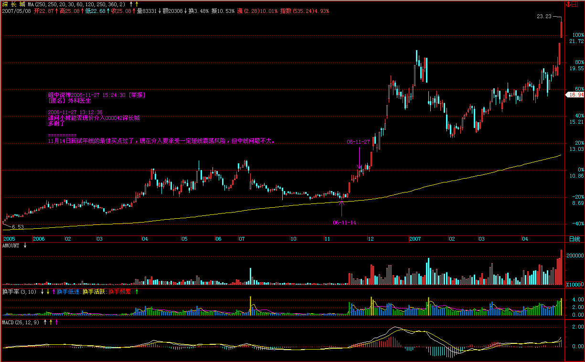
(2006-11-27 15:24:30)
-------
[匿名] mm 2006-11-27 13:13:07
博主，你好!怎么看600581
=============
前两天才回答过，4元的120周线是压力，短线蓄势攻击，折腾少不了。中线问题不大。
(2006-11-27 15:27:25)
-------
[匿名] 想发财2006-11-27 13:16:21
请LZ看看000959、600508，多谢！
==========
000959年线蓄势，中线问题不大，短线需要补量。
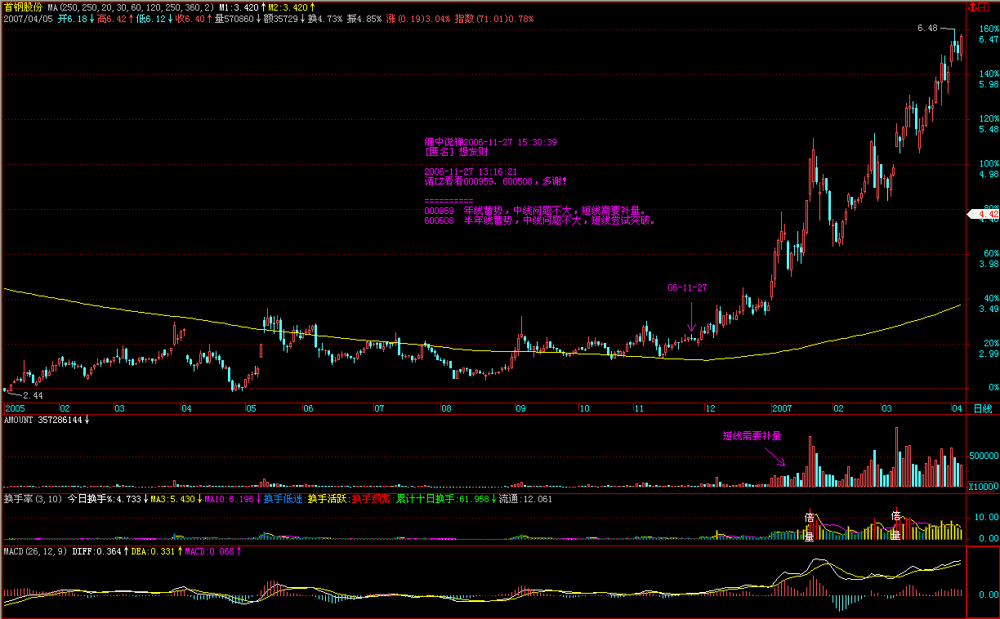
600508 半年线蓄势，中线问题不大，短线尝试突破。
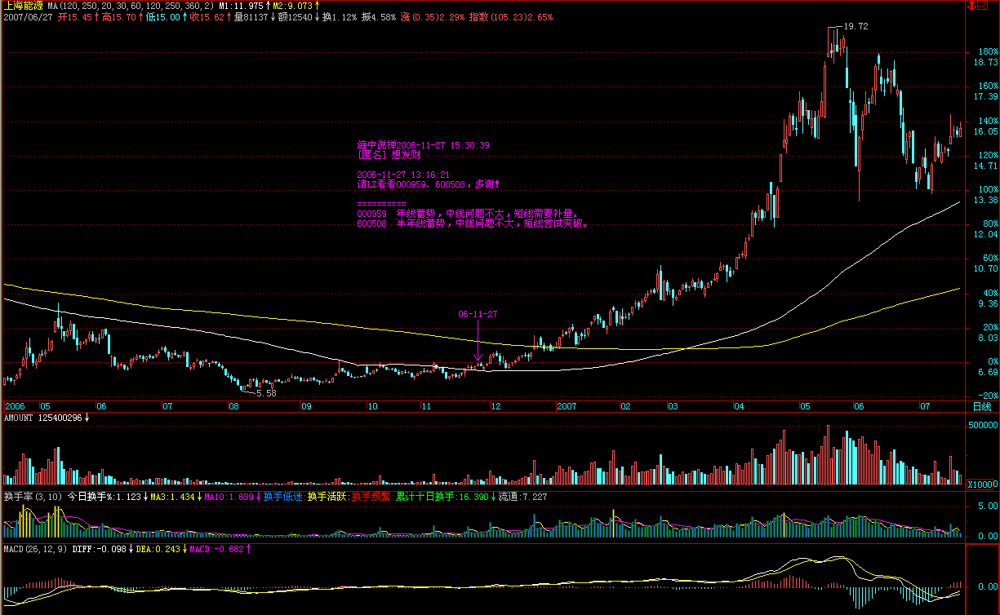
(2006-11-27 15:30:39)
-------
[匿名] 冰火2006-11-27 13:40:26
大姐, 请问我的判断是否对,000407, 中线不错, 短线半年线有反复.但好象就要启动.000503, 短线启动, 中线不错, 但启动后还需确认.好像大姐看盘主要是看均线系统啊.谢谢.
=======
000407, 均线没完全走好，箱型整理蓄势。
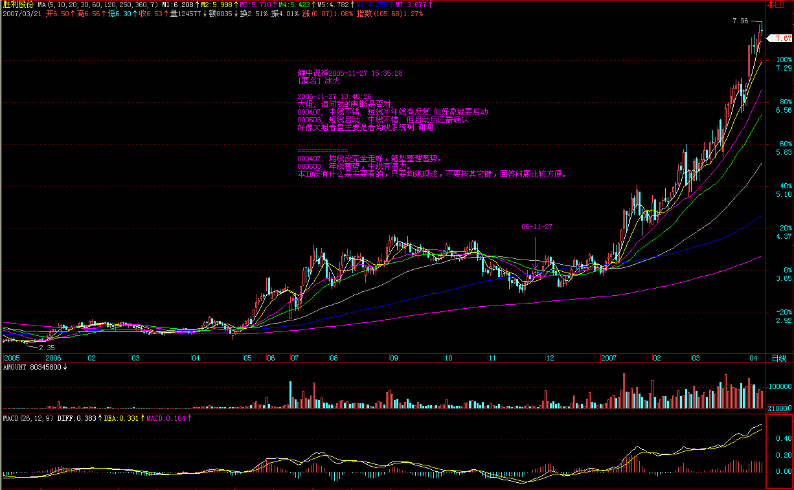
000503, 年线蓄势，中线有潜力。
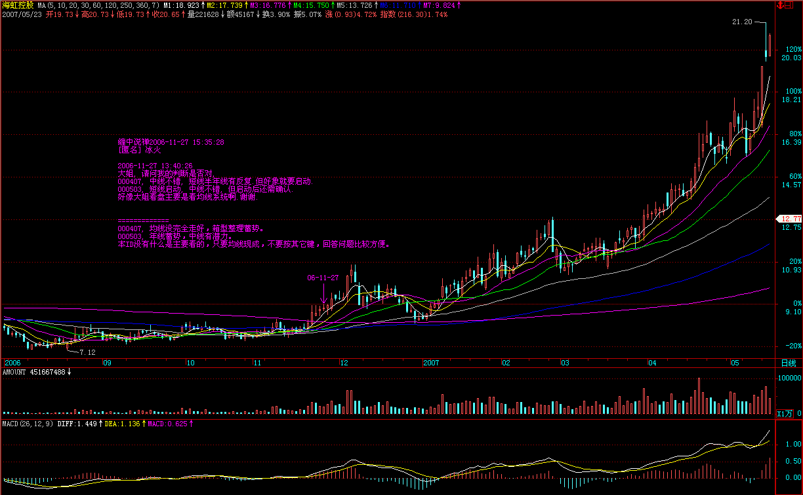
本ID没有什么是主要看的，只要均线现成，不要按其它键，回答问题比较方便。
(2006-11-27 15:35:28)
-------
[匿名] 7nt2006-11-27 12:56:28
本女和证监会从一开始就有打交道，从第一届到现在，都很熟悉。
==============
据相关资料,楼主应该是80年代出生的人,第一届证监会成立于1992年10月,那时楼主应该才12岁左右,楼主怎么和它们打交道?另外楼主在2005年6月前整整4年没有抄股,25岁减4,也就是说楼主在21岁前就已经赚够亿元身家,请问楼主多大开始投资股市?起步资金多少?虽然这些问题含有隐私问题,但回答这些问题也可以让那些怀疑楼主年龄及资金来路的人消除疑问.先谢谢楼主了.
==============
关于年龄，本ID只说过没经历文革时代，其他什么都没说过。 本ID为什么就不能和刘大爷打交道？后面三位周大爷、周大叔的，本ID为什么就不能打交道？刘大爷现在还在很多地方兼了很多职务呢。
(2006-11-27 15:47:16)
-------
[匿名] 真冰火
(2006-11-27
15:50:51)
-------
[匿名] 炼铁设备2006-11-27 14:58:33
我完全不懂股票，看着大家向楼主请教股票潜力的气氛，我竟插不上嘴，心里感到惭愧．楼主，趁在牛市的好时机，能否给我推荐一支股票，一方面发点小财，另一方面学点股票知识，借以扫盲．谢谢
========
本ID不是股评，没兴趣也没资质推荐股票。市场里永远有机会，关键你是否能把握。还是先学吧。
(2006-11-27 15:53:23)
-------
有事先下，晚上有时间再上来，再见。
(2006-11-27 16:03:43)
-------
[匿名] 急等钱用2006-11-27 17:25:23
请教600704， 4.75元套牢这星期能解套否?
=============
投资最重要的一条就是用来投资的钱必须是多余的，可以长期利用的。本ID不想当算命先生，希望你好运吧。
(2006-11-27 21:39:46)
-------
[匿名] 无言2006-11-27 18:13:35
请教楼主,600879在这周行情中向上空间有多大,谢谢
=========
预测是股评干的事情，本ID不是股评。要在投资市场成功，唯一只需要知道，此时此地能搞吗？如果仍在能搞的标准下，就继续持有，否则抛弃，就这么简单。
(2006-11-27 21:43:15)
-------
[匿名] 想飞2006-11-27 15:17:28
LZ,请问600036调到位了吗
==========
一定要改变思维模式，不要问什么调整到位没有的问题，而是要问自己搞的标准是什么，每个人的标准都不同，这与资金量和投资经验有关。唯一正确的问法是：600036现在符合自己搞的标准吗？ 是否符合，只有你自己知道，如何你自己都不知道，那请你先停下来，自己想清楚，不清不楚就把市场到赌场，市场会变脸的。
(2006-11-27 21:48:25)
-------
[匿名] 面首
2006-11-27 20:09:04
我有一万元能不能炒股啊，会不会因此发财？
===========
为什么不呢？但发财只是一个结果，心里有结果，就不会有结果了。先问自己能否耕耘吧。
(2006-11-27 22:02:03)
-------
[匿名] 清2006-11-27 21:20:16
问题：中信国安03年买入，S宁新百04年买入，其实只是执着不想卖出而已，你觉得如何操作。给我一个操作建议，别说得太“股评”呀，可以的话不妨说明可以持有到什么时候。
==================
既然已经长线持有了，就一直持有到长线不能持有为止，而现在没有任何这样的信号产生。
(2006-11-27 22:04:55)
-------
[匿名] 狼2006-11-27 21:47:28
请教000850，000680后市如何操作，谢谢！！
==============
000850 大涨后的中线调整中，短线要突破需补量。
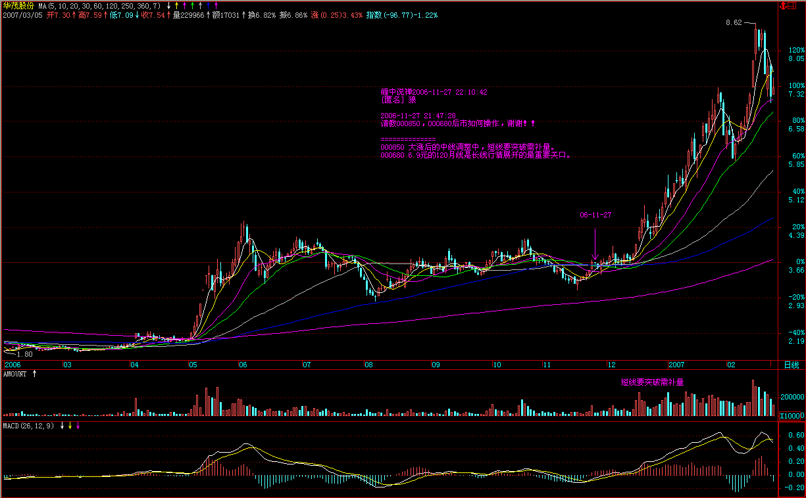
000680 6.9元的120月线是长线行情展开的最重要关口。
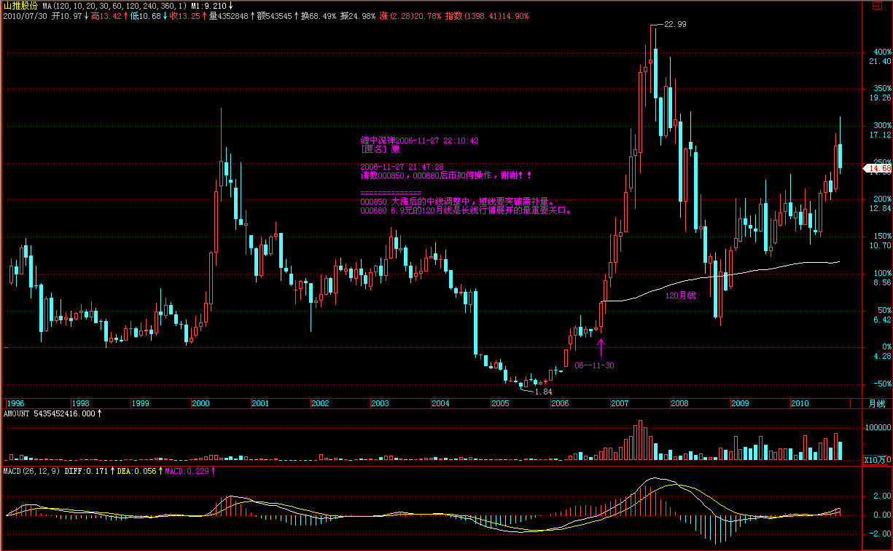
(2006-11-27 22:10:42)
-------
[匿名] 关于有色股2006-11-27 21:54:52
今天下午时候似乎有色股的主力在撤退？似乎在进攻其他的品种，LZ如何看？这是主力暂时的撤退吗？很快又能搞起来？
===========
短线轮动很正常，长线看，有色股票的分化在于筹码的集中度，有些散户拿的太多的，就只能继续折腾了。散户不敢拿的，都变庄股，走起来就没谱了。
(2006-11-27 22:13:34)
-------
[匿名] 小股民2006-11-27 21:58:57
请楼主禅师帮忙看看600426和600016的后市
不知道这会进入600016会不会有大风险
===============
600426 一般股票从个位到十位都要长期折腾的，该股就是围绕10元干这活，中线问题不大，短线还是看成一个9到11元的大箱型比较稳妥。
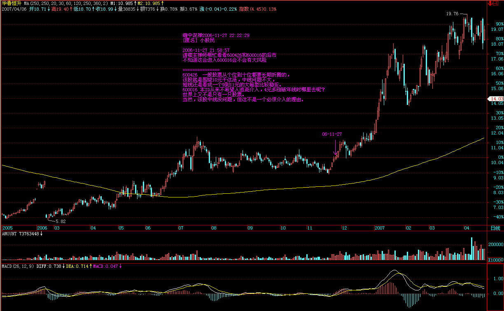
600016 本ID从来不希望人追高介入，4元多刚破年线时哪里去呢？世界上又不是只有一只股票。当然，该股中线没问题，但这不是一个必须介入的理由。
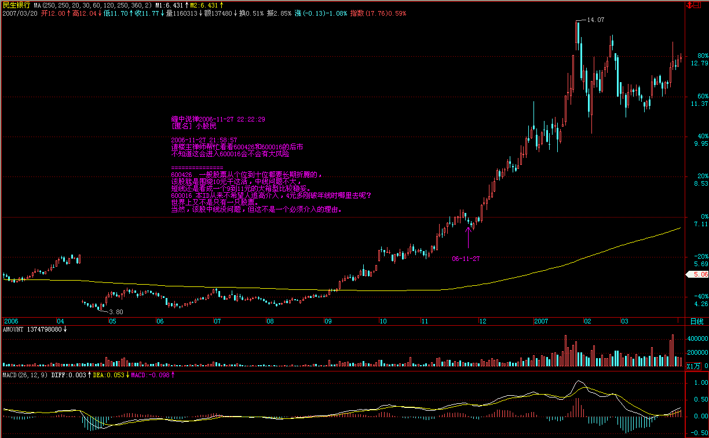
(2006-11-27 22:22:29)
-------
[匿名] xuesheng2006-11-27 22:17:58
请问lz,000897如何。
========
大涨后的三角形整理，短线要突破需补量。
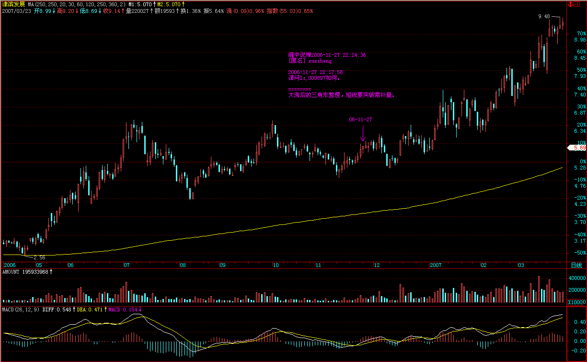
-------
[匿名] LIVERPOOL2006-11-28 02:47:18
请教数女：
600500,600642后市如何操作.关注600256,过了买入时机，请问还有机会吗？谢谢！！
============
持有等待卖点出现。 股票在任何时候都可以买入，唯一的不同是承受的风险的不同。而好的方法就是在最低风险的时候介入，但世界上没有绝对无风险的机会。介入的关键是你明白你的风险在哪里，能承受多少，怎么退出。
(2006-11-28 09:07:54)
-------
[匿名] 密码2006-11-28 06:38:28
这么说来600550、0523这种刚回踩年线的最值得搞喽？缠MM是不是这个意思？
===========
请好好看教你炒股票9：甄别“早泄”男的数学原则！(2006-11-28 09:09:32)
-------
以后有新帖请到新帖子问。 回答也在新帖子。
(2006-11-28 12:54:39)
-------
今天走势很正常，关键还是这两天一直强调的5日线，目前最稳妥的走法就是让5日线和10日线来个接吻的前戏，然后再次高潮。但必须再次指出，这次高潮过后，相应的不应期要比这次长。
(2006-11-28 12:15:13)
-------
[匿名] 蕃茄2006-11-28 12:20:56
按楼主的说法,深沪两市继续背离呀,这前戏难度大点
===========
难度不大就不叫前戏了。前戏是难度最大的，有前戏，高潮可待，连前戏都没有，只能喝西北风了。
(2006-11-28 12:23:05)
-------
[匿名] 破缠悟禅2006-11-28 12:22:06
禅师，现在大盘的走势和你说的基本一致，请教个问题，你预测下一波中哪个版块应该可以先达到高潮？谢谢指点！
==========
所有板块都会动一次的，如果从力度上看，还是中低价股的补涨上，特别是强势板块的补涨股。毕竟目前人都很谨慎。新板块的大面积高潮，要等待下一次大的不应期结束之后。
(2006-11-28 12:25:31)
-------
[匿名] 希望你比我过得好2006-11-28 12:27:40
楼主：我最几天拿了点路桥建设，到昨天为止，已经收了七连阳，天天担心调整，今天早上终于把我洗出去，您看此股走势怎样，如果可以我还想接进来，不知有没有机会！（害怕越等成本越高）
===============
这种股票短线最好操作了，5日线不破就拿着，万一它玩小阳后长阳的着数怎么办？
(2006-11-28 12:32:45)
-------
和各位说说银行股，不是让各位现在买，只是银行股是大盘风向。
目前最重要的是招商，他突破历史天价后回试。整个大盘和银行股的走势与之极为密切，一旦他能真正突破历史天价，所有银行股都会进一步扩展上升空间。所以他的走势对短、中线大盘的力度十分关键。
试想，一个站在25-30元的招行，为所有股票打开了多大的上升空间。更别说50元的了。
招行最终能否上50元，这点本ID不愿意预测。但本ID只知道，每次大行情，深发展都上50元。招行也是深圳的，他的行长姓马。
(2006-11-28 12:37:43)
-------
[匿名] 不应期2006-11-28 12:31:37
请楼主看看600508、000959、000630，哪个更适合中长线呢？谢谢！
==============
中线都没问题，至于长线，本ID只对4N9感兴趣，对天长地久的谎言没兴趣。
(2006-11-28 12:39:49)
-------
[匿名] 蕃茄2006-11-28 12:35:18
缠中说禅
难度不大就不叫前戏了。前戏是难度最大的，有前戏，高潮可待，连前戏都没有，只能喝西北风了。
----------------
楼主自研的这套东东还真的满贴切,看来沪市要接吻还是要靠银行呀
============
吻有几种：如果是飞吻，太轻飘，以后的走势不稳。唇吻：这要小心骗线，只要不是骗线，其后走势都较好。湿吻：骗线几率太大，但如果不是，那走势反而比较火暴。
(2006-11-28 12:43:24)
-------
[匿名] 新手2006-11-28 12:33:58
麻烦LZ看看600010、601398,多谢.
===============
中线都没问题。
(2006-11-28 12:45:16)
-------
[匿名] 蕃茄2006-11-28 12:44:21
缠中说禅，招行最终能否上50元，这点本ID不愿意预测。但本ID只知道，每次大行情，深发展都上50元。招行也是深圳的，他的行长姓马
--------------------------------
他要让他的票票天马行空吗:)
=============
这样最好，皆大欢喜
(2006-11-28 12:46:32)
-------
[匿名] 爱你——数女2006-11-28 12:44:58
请教：深圳还能炒房地产吗？我问的是买房子，谢谢！
==============
本ID好几年没买过房子了，不熟悉。炒房子还不如炒造房子的股票，就像汽车，你肯定对夏利没兴趣，但对夏利股票就不一定了。
(2006-11-28 12:48:41)
-------
[匿名] CCTV2006-11-28 12:47:03
爱你``````
======
别，现在还是爱玩、爱学玩股票比较实际。
(2006-11-28 12:49:33)
-------
[匿名] 数女粉丝2006-11-28 12:43:02
请问002037，我8块进的，近期能否解套？谢谢！
=========
不要在所有均线都向下发散时买股票，风险太大。最近中小版的面首们扩张的也太快了，大家都有喜新厌旧的毛病，而且还有小非的压力，所以老的只好委屈一下了，等等吧。
(2006-11-28 12:59:36)
-------
[匿名] 你的样子2006-11-28 12:54:13
呵呵，好久没跟新这个了。这两天听缠女的教导，先学习。可是发现股票这个东西什么时候能学通了啊？又没有缠女的领悟力，什么东西一看就是最高境界。恐怕待自己学明白点，大牛市都过去了，于是决定缩小学习目标，只看缠女的股票文章。翻来覆去的看。看看能不能悟出什么点东西来。缠女能说说目前是入市时机么？
=======
学好了，永远有机会，熊市里都不缺机会。关键是股票，你入的是股票，所以只要是好的股票，符合你指定的能搞标准就可以入，不入白不入。
(2006-11-28 13:02:30)
-------
开盘，下了。再见。
2006-11-28 12:15:13
今天走势很正常，关键还是这两天一直强调的5日线，目前最稳妥的走法就是让5日线和10日线来个接吻的前戏，然后再次高潮。但必须再次指出，这次高潮过后，相应的不应期要比这次长。
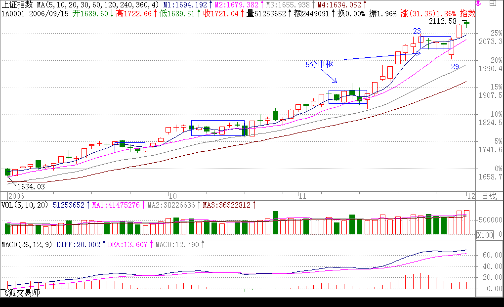
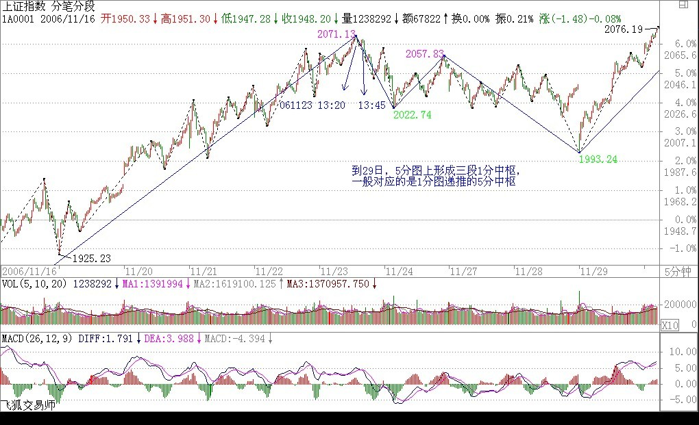
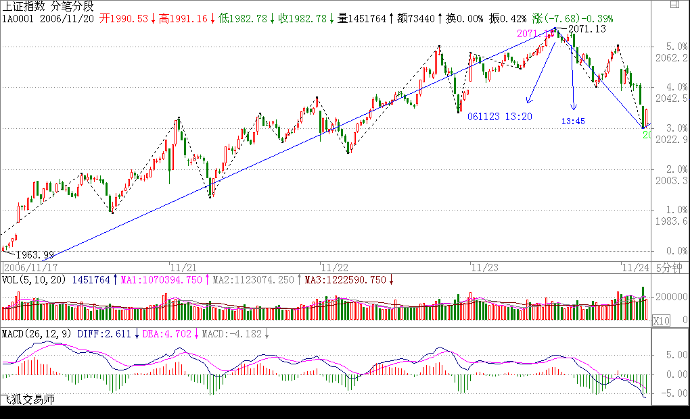 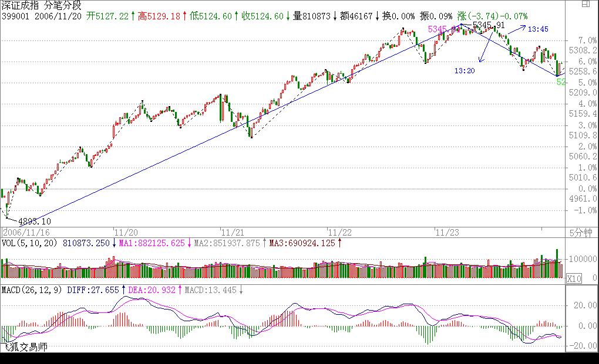
|
|
|
|